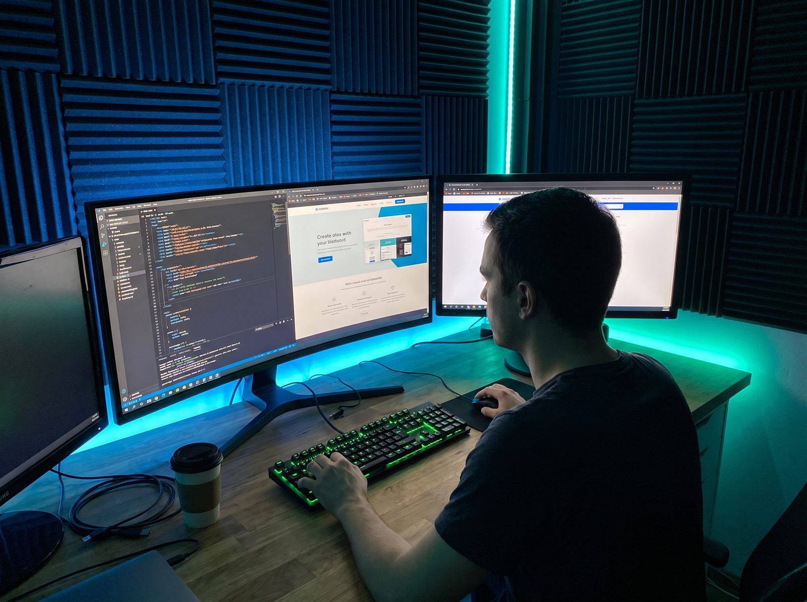

Posicionamento claro
Textos que explicam quem você atende, o que resolve e por que o cliente deve falar com você.

Criamos um site profissional para sua empresa ser encontrada no Google, gerar confiança e receber contatos pelo WhatsApp.
Uma página bonita ajuda, mas o que vende é a combinação de mensagem, velocidade, SEO, confiança e chamada para ação.
Textos que explicam quem você atende, o que resolve e por que o cliente deve falar com você.
Title, description, sitemap, tags sociais, imagens otimizadas e dados estruturados.
Botões e mensagens prontas para acelerar pedidos de orçamento sem complicar o atendimento.
Empresas locais, prestadores de serviço, consultórios, lojas, autônomos e negócios que dependem de confiança para vender.
Processo simples, com escopo definido antes de começar.
Entendemos público, serviço, cidade, oferta e objetivo comercial.
Montamos seções, textos, imagens e chamadas de conversão.
Desenvolvemos o site com performance, responsividade e SEO técnico.
Publicamos, testamos e deixamos pronto para Google Search Console.
Ele fica preparado tecnicamente, mas o Google precisa rastrear e indexar. Também recomendamos Search Console e Perfil da Empresa no Google.
Sites institucionais normalmente levam de 7 a 15 dias, dependendo do conteúdo e do escopo.
Sim. Organizamos a mensagem comercial com base nos serviços, cidade, público e diferenciais da empresa.
Chame no WhatsApp e diga qual serviço você oferece. Eu avalio a melhor estrutura para o seu site.